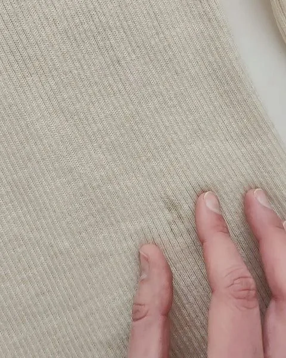
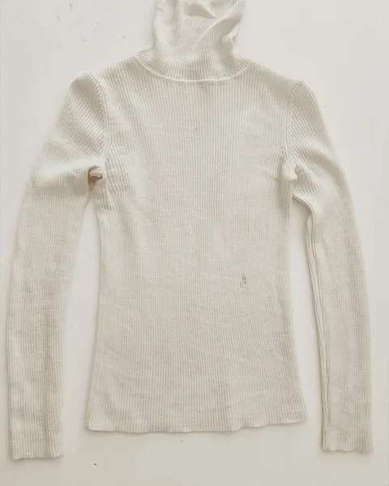
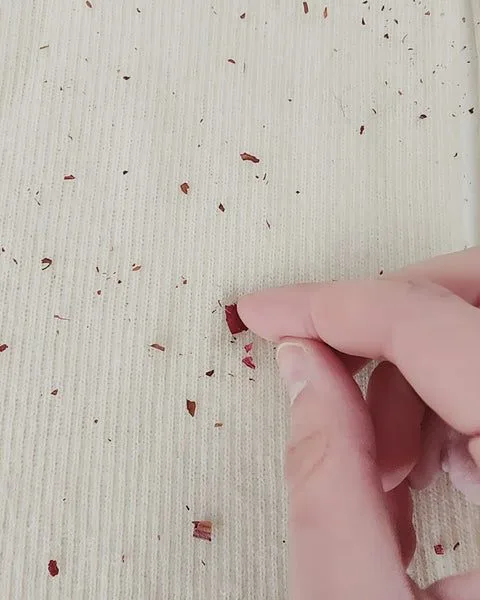
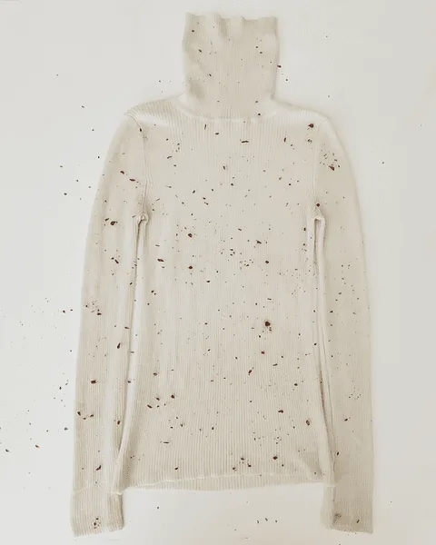
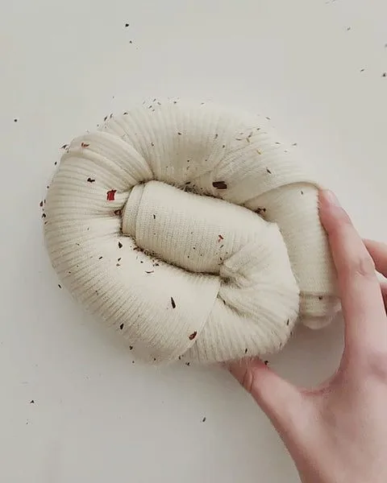
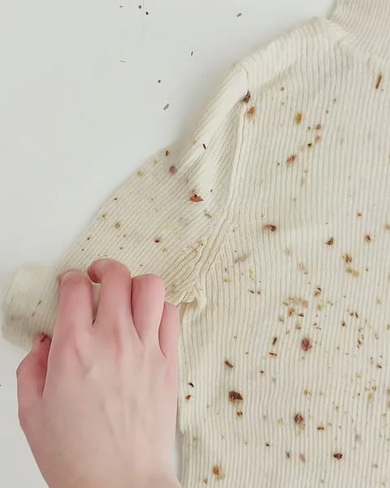
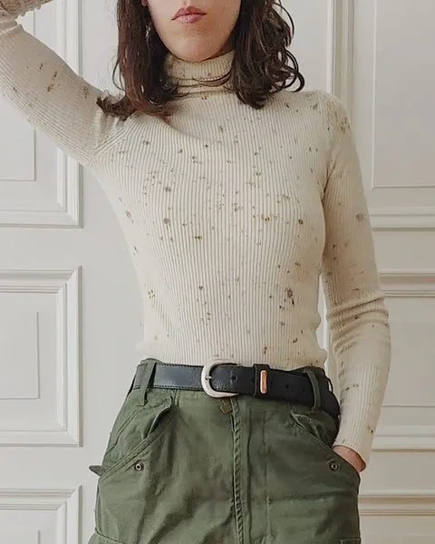
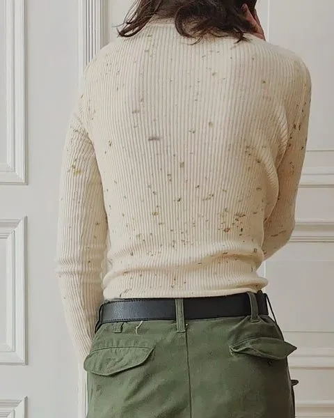

I stopped buying new clothes in 2015, when I learned about the social costs of the fashion industry (not to mention the environmental costs on top of that, but it's people's suffering that tipped the scale for me). I still make exceptions from time to time when I need new socks or underwear, though I purposefully haven't bought any fast-fashion items in the past decade. I'm not saying this from a higher moral ground, far from it. I mean it as encouragement, because I believe anyone can do it and should do it. It's better, cheaper, and looks cooler. The only "less" — it's less easy.
Here's how I upcycled my beloved second-hand turtleneck with bundle dyeing.
Requirements for plant dyeing
- Plant dyes only work on natural fibers: cotton, linen, wool, silk, and so on (no acetate, polyamide, acrylic, nylon, polyester). Always check the fabric label to avoid disappointments.
- Plant dyes are translucent. Whatever color is used as a "base", it's going to be visible after dyeing. Depending on how the piece was dyed previously, some garments will take up new color poorly, so the safest option is white or beige.
- Clothes have to be washed before dyeing. For cotton and linen, wash with baking soda (natron) and without bleach or softeners. For wool and silk, rinse with wool soap.
- The durability of natural color is a spectrum and depends on the fixatives and plants used. Plant-dyed textiles can only be washed by hand using ecological washing soap, and should be stored away from direct sunlight.
Preparing the fabric
Two ways to go here: either you use a natural pre-fixative and get more durable colors, or work without it and re-do the dyeing every once in a while. I suggest always working with a pre-fixative for plant-based fibers like cotton or linen. Wool and silk generally take up plant colors better, so if you don't mind re-dyeing the fibers when the dyes fade, it's an easy option.
For my wool turtleneck (like for most of my projects) I worked with aluminum formate. This is my favorite pre-fixative. It's an aluminum salt which is applied cold by soaking the fibers in its solution. I usually let the fibers sit in the solution for at least 24 hours, but for this one I wanted it to be quick and easy so I tried just one hour and it seemed to work OK. When handling aluminum or other metal salts, always wear gloves.
Choosing the dyes
Plant color durability is a spectrum. I never get tired of repeating that, because it's one of the main features of natural dyes I want you to remember. If your plant color is not durable in itself, no fixative will change that. I find it to actually be a super cool feature — especially in bundle dyeing. As color spots change at a different pace, your garment seems to live its own secret life.
Sometimes less is more, and a little goes a long way. I loved that the turtleneck was cream-white and I didn't want to change it, so my plant selection was purposefully scarce. I worked only with one dye — dried rose — and used minimal amounts of plant matter. My idea was to get modest beige splatters that would mask existing (and future) stains.


Dyeing process
After soaking the piece in aluminum formate, I scattered a small amount of rose petals over the front of the turtleneck. I then rolled it up from the bottom to the top. I didn't have to add any more plant material to the back, as the petals were now sandwiched between both sides. I scattered some more dye over the exposed parts after bundling, and wrapped my package in a piece of cloth to hold everything tight.



To set the dye, it should be exposed to heat. You can simmer your piece or steam it. The difference is that steaming makes clearer prints, while simmering makes the dye dissolve in water and partially transfer to the background too. I steamed my turtleneck for one hour, and because it's wool, I let it cool down overnight before opening and rinsing it thoroughly in cold water.

New (to me) bundle-dyed turtleneck
What I specifically love about the result is that despite using just one single dye, the pattern is multi-colored. Rose petals made beautiful speckles, from brown to beige, green, yellow, and even purple and blue. They are all very muted, though, and work beautifully against my cream-white base. The stains I wanted to cover are no longer to be spotted. I expect the speckles to all become more beige over time (rose is not specifically a great dye source), and I know I will love it then too. Because this garment is made of wool, the speckles will most probably never fade, but if they did, I know how to refresh them.

